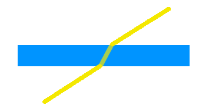

Moltes escenes inclouen objectes transparents o translúcids, és a dir
objectes que deixen passar a través d'ells part de la llum que hi
incideix. Hem vist que una manera d'obtenir imatges sintètiques que
incloguin objectes transparents és per traçat de raigs, mecanisme que
permet modelar amb força precissió aquest fenòmen quan no hi ha
dispersió.  En
aquestes transparències els raigs de llum incidents modifiquen la
seva direcció en travessar l'objecte, i la seva intensitat es veu
reduïda lleugerament, però el raig no es desdobla. Si (a diferència
del que passa a la figura de la dreta) les cares d'entrada i sortida
del raig no són paral·leles, la direcció final de sortida resultarà
diferent de la del raig d'entrada. Els objectes curvats, faran de
lens, ampliant, reduint i deformant les imatges que veiem a través
seu.
Els objectes translúcids -com per exemple un vidre esmerilat o entelat- deixen passar a través seu la llum, però a diferència del que tot just hem discutit, cada raig de llum incident es veu desdoblat en múltiples raigs, igual que passa amb la il·luminació difosa. La distribució de la llum de sortida determina el comportament del material translúcid envers la llum, que pot variar des d'una distorsió de la imatge tansmesa (que permet encara reconèixer alguns trets) a una il·luminació pràcticament homogènia de sortida.
Malgrat el traçat de raigs pot reproduir molts d'aquests fenòmens de forma fidel, també hem vist que és una tècnica de generació d'imatges molt costosa, i fora de qüestió quan es volen imatges generades en temps real, de forma interactiva.
El propòsit d'aquest apartat és discutir les maneres de presentar
objectes transparents a les nostres escenes quan fem servir OpenGL.
Per a fer-ho cal simplificar el problema. De fet tot el que discutirem en
aquest apartat es limitarà a simular l'absorció de part de l'energia
per l'objecte transparent (és a dir: OpenGL ens permetrà simular
l'efecte d'atenuació de la llum) però no el desplaçament dels raigs
en travessar l'objecte transparent (que seria apreciable en el cas
d'un vidre força gruixut, per exemple, si es troba molt inclinat
respecte de la direcció de visió, o si modelem una peixera plena d'aigua).